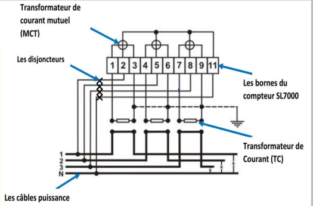
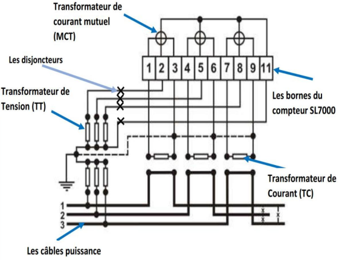

Indirection connection without Voltage Transformers
-
Introduction
The indirect connection of SL7000 energy meters without measurement voltage transformers is the type of connection in which connections to the voltage circuits of the meter are done directly. The energy meter and current carrying conductor or busbar of the system both share the same voltage magnetude. This therefore means that any voltage perturbation on the current carrying conductors is channelled directly to the energy meter. This method of connection exposes the energy meter more to external influences like voltage surges and over currents. A line diagram of this method of connection is shown below in figure 01. 
From figure 01 above, we can retrieve the following information:
- Connections to the voltage circuits of the energy meter are done directly, passing through the circuit breakers. Overcurrent protection is available, but no overvoltage protection.
- Current circuits connections are done indirectly, passing through the current transformers.
NB: This configuration method is suitable for connecting energy meters in a system with lower voltage variations. For example, isolated systems.
Indirection connection with Voltage Transformers
-
Introduction
The indirect connection of SL7000 energy meters with VTs is the one in which connections to the energy meter's voltage circuits are carried out using VTs. Voltage perturbation on the busbar will not affect the energy meter as it is been scaled down by the VTs. The voltage transformers as a result provide protections against surges and overcurrent. A line diagram of this method of connection is shown in figure 02 below. 
From figure 02 above, we can retrieve the following information:
- Connections to the voltage circuits of the meter is done indirectly passing through VTs, the circuit breaker and the voltage measurement boxes . Overvoltage and overcurrent protection are available.
- The current circuit connections are made indirectly, passing through the CTs and the current measurement boxes.
NB: This configuration method is the most suitable method for connecting energy meters as it provides protection against overvoltages which are in most cases the main cause of meter failures.
Eventhough it is the most suitable method for connecting energy meters, it can also cause meter failures and false readings if the VTs used are poorly selected.
For example using protection voltage transformers for measurement is relatively a bad idea as these transformers do not get saturated quickly under fault conditions as compared to measurement VTs.
In addition, they also produce distorted ouput under fault conditions which will enable meters to produce false readings.
Thus, proper care should be taken when selecting voltage transformers for measurement to ensure the chosen VTs are main for measurements.
To better comprehend this, you can check out at: